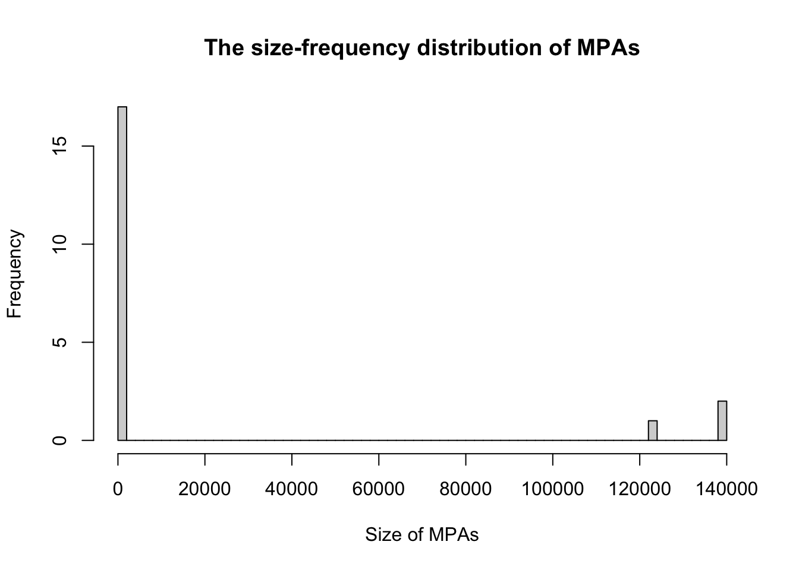
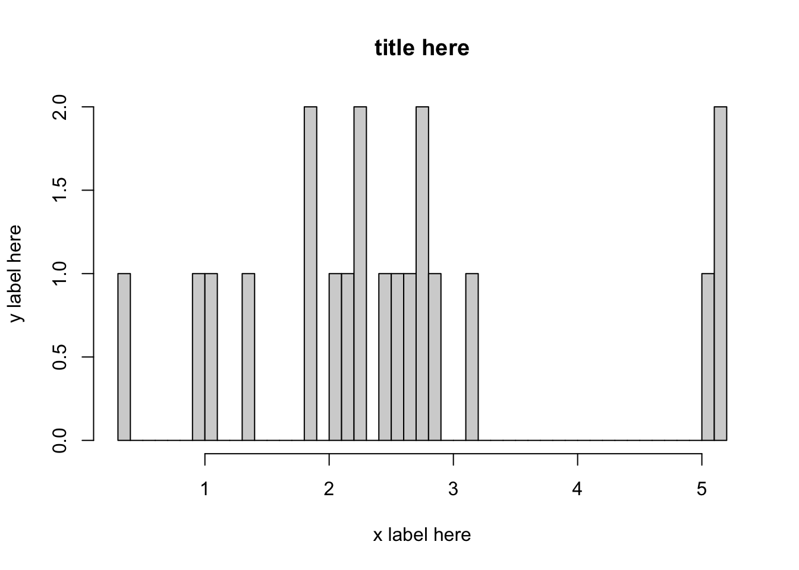

How to do the analysis in R
Data importation and filtering
Let’s explore the protected areas data from the World Database on Protected Areas.
- It is best to make a folder on your computer Desktop where you will work on this assignment (if needed, review Best Practices).

Download the
.csvfile spreadsheet for protected areas in the country you are studying from the World Database on Protected Areas to the folder you made. You may rename the.csvfile you downloaded eg.protected_areas.csvOpen and save a new R Script in your folder. One of the first commands of your R Script will be to load your data. For example:
data1 <- read.csv(file = "protected_areas.csv")When writing your R script you need to learn about using your Console versus writing your R Script in the Source pane. Please read the section Finding your way around R Studio if this is unfamiliar.
When you find a command that is essential to your analysis, you should put it in your R Script. Note that the order of the commands is important: the will run top to bottom. If you just want to test out a command, then use your Console. After you find a command that works (by testing in the Console), you might want to add it to your R Script. To run all the commands in your R Script (line by line) you use the Source button (or find Source from the Code menu), or you highlight the lines to run and use the Run button.
- In the Console, inspect your data to check that it has loaded. For example:
head(data1)We put this command in the Console because it is just to check that the data loaded correctly. It isn’t necesssary to have this command in our R Script, however, the read.csv() command from above is essential, so you definitely want that one amongst the first few lines of your R Script. After you add a few lines to your R Script, you will want to periodically run your whole R script to make sure it is working as you expect.
If your data has not loaded, the most likely problem is a spelling error or problems with specifying the path to protected_areas.csv. You might try:
the RStudio way of importing your data, or
moving
protected_areas.csvto your working directory. The working directory is the folder you created to contain your data and files.
- After loading the data, read through the metadata file that is downloaded as a pdf file along with the
.csvfile to better understand the data.
Data and metadata can be found here
https://www.protectedplanet.net/en/search-areas?geo_type=site
- You will want to do some exploration of your data. See Handling the data for how to recover the names of the columns for all the data.
names(data1)## [1] "TYPE" "WDPAID" "WDPA_PID" "PA_DEF" "NAME"
## [6] "ORIG_NAME" "DESIG" "DESIG_ENG" "DESIG_TYPE" "IUCN_CAT"
## [11] "INT_CRIT" "MARINE" "REP_M_AREA" "GIS_M_AREA" "REP_AREA"
## [16] "GIS_AREA" "NO_TAKE" "NO_TK_AREA" "STATUS" "STATUS_YR"
## [21] "GOV_TYPE" "OWN_TYPE" "MANG_AUTH" "MANG_PLAN" "VERIF"
## [26] "METADATAID" "SUB_LOC" "PARENT_ISO3" "ISO3" "SUPP_INFO"
## [31] "CONS_OBJ"Note that names(data1) is a good command to run in the Console because we want to know the column names so that we can extract the correct column later: names(data1) would be run in the Console because it is a query rather than an essential part of the analysis.
- You could also use the
summary()function to run a quick statistical summary of the data frame, calculating mean, median and quartile values for continuous variables. Try this in theConsole:
summary(data1)Again, summary(data1) is a query - to check that our data looks okay, so we opt to run it in the Console rather than adding it to our R Script.
- To extract a column of the data, see Handling the data. You may use either Approach 1:
dplyror Approach 2: base R. Generally, thedplyrcommands tend to be simpler, however, it is good to also know the base R commands. You need only choose 1 approach. We recommend Approach 1:dplyr, unless you have prior experience with base R and prefer to do the analysis that way.
Approach 1: dplyr
If you have not installed the dplyr package you will need to install it. Please read install.
Once it is installed, to use the dplyr functions you need to load the package:
library(dplyr)This command is essential, and generally we would put it as one of the first commands in our R Script.
Now we select the MARINE column, with the command:
select(data1, MARINE)The output of select(data1, MARINE) is a data frame because the variable has an associated name.
Approach 2: Base R
To view the MARINE, column of the data in the Console, try:
data1$MARINEBe sure to type exactly MARINE after the $.
You need to write the column name exactly as it appears in the output of names(data1) or RStudio will produce an error. Remember MARINE is capitalized in the data frame so be careful not to type Marine which will come out as an error.
Creating a new object
This section is focused on subsetting the data that was named data1 and creating a new object to hold the processed data. We will call this data2.
- We want to filter the data to separate protected areas identified as exclusively terrestrial from those that include marine areas. The new data created will be saved as
data2. Let’s run this code in theConsole:
Approach 1: dplyr
data2 <- filter(data1, MARINE != 0)Approach 2: base R
data2 <- data1[data1$MARINE!=0,]Note, the comma inside the square brackets indicates to take all columns for the rows where MARINE!=0 is TRUE.
Both approaches
In the MARINE column 0 indicates that a site is not marine. The new variable data2 now contains all the rows for the marine sites because !=0 means the value is not 0, and so therefore the site is marine (a double negative!).
Check your output:
head(data2)
head(data2$MARINE)In particular, look at the MARINE column. Are there any 0s left in the MARINE column? No? Good, because we want the marine sites, so we do not want any 0s in the MARINE column.
- We want to compute the average size of coastal MPAs. Let’s take a look at the value of
GIS_M_AREAin row 18041:
data2$GIS_M_AREA[18041]## [1] NAOh no! The value of the column GIS_M_AREA for this row of data is NA. This means that no value was recorded. This will ruin our calculation of the average so we need to remove these NA values from the GIS_M_AREA column.
Which rows are NAs? We can find out like this:
head(which(is.na(data2$GIS_M_AREA)=="TRUE"))## [1] 17545 17546 17547 17548 17549 17550length(which(is.na(data2$GIS_M_AREA)=="TRUE"))## [1] 497where head() is used to return only the first 6 rows with NA values so as to not return a lengthy output, and length() is used to tell us there are 497 NA values in the GIS_M_AREA column.
Approach 1: dyplyr
Here is the command to remove the NAs as described in Handling the data:
data3 <- filter(data2, !is.na(GIS_M_AREA))The above line of code is more than a query, it is an essential step in the analysis so you will want to add it to the code in your R script in the Source pane.
Approach 2: base R
To remove the NAs
data3 <- data2[!is.na(data2$GIS_M_AREA),]Both approaches
Let’s check that we effectively removed the NAs from the data.
head(which(is.na(data3$GIS_M_AREA)=="TRUE"))
length(which(is.na(data3$GIS_M_AREA)=="TRUE"))Now we see that data3 is a cleaned up version of data2 that no longer contains the the NA values in the GIS_M_AREA column because when we use length() to find out how many of the values in data3$GIS_M_AREA are NA and the returned value is 0.
The commands above are a query so you would run them in the Console to check that your analysis is going to plan, however, you do not need to include this in your R Script.
- We can now calculate the average size of the coastal MPAs. Let’s run this code:
mean(data3$GIS_M_AREA)- The median size of the coastal MPAs can also be found by running a similar code as follows:
median(data3$GIS_M_AREA)Preparing the data for graphing
Before, we can make the graphs we will need to organize the data we want to graph.
- First, we would like to graph the number of areas in each level of protection. To do this, we will have to group the data according to the level of protection and count the number of areas in each level of protection and saving it as
data4.
Approach 1: dplyr
data4 <- data3 %>%
group_by(IUCN_CAT) %>%
tally()Approch 2: base R
Joseph add code here
Both approaches
Let’s query the result in our Console to see that this worked:
data4## # A tibble: 10 x 2
## IUCN_CAT n
## <chr> <int>
## 1 Ia 1539
## 2 Ib 256
## 3 II 731
## 4 III 756
## 5 IV 4872
## 6 Not Applicable 191
## 7 Not Assigned 1113
## 8 Not Reported 5469
## 9 V 1638
## 10 VI 979Yikes! Rows 6, 7, and 8 are Not Applicable, Not Assigned and Not Reported. We need to remove these.
We delete the rows that have NAs by running this:
data4 <- data4[-c(6, 7, 8), ] Note that the minus sign indicates to remove.
Our data describing the number of areas in each level of protection is now ready as data4, but let’s clean more data to make another graph before moving on to the graphing section.
- Now we would like to calculate the amount of area that is strongly protected.
Approach 1: dplyr
We can do this by grouping by the IUCN_CAT column of the dataset and summing the GIS_M_AREA accordingly and naming the resulting data as data5. Let’s run this code in the Console:
data5 <- data3 %>%
group_by(IUCN_CAT) %>%
summarise(AREA_SUM = sum(GIS_M_AREA))Approach 2: base R [Joesph add here]
Both approaches
We can check the result by typing, in the Console:
data5## # A tibble: 10 x 2
## IUCN_CAT AREA_SUM
## <chr> <dbl>
## 1 Ia 2096610.
## 2 Ib 390707.
## 3 II 1038162.
## 4 III 121394.
## 5 IV 5188049.
## 6 Not Applicable 2761553.
## 7 Not Assigned 1506267.
## 8 Not Reported 9353197.
## 9 V 5830637.
## 10 VI 7708143.Note that this time, we would like to leave the categories: Not applicable, Not assigned and Not reported (Evan is this right???). If data5 looks good, you will want to add the commands that produced data5 to your R script in the Source window.
Making graphs
In this section we will made graphs of data4 and data5. You can read more on Making graphs in R.
- We would like to construct a histogram to graph the size-frequency distribution.
We will construct a histogram without logarithm scale with the function hist(). The data we need to use are data3$GIS_M_AREA which contains the areas of the marine protected areas:
hist(data3$GIS_M_AREA, breaks = 50,
xlab = "Size of MPAs",
ylab="Frequency",
main = "The size-frequency distribution of MPAs") # Histogram without logarithmic axis
We can plot these results on a logarithm scale as:
hist(log(data3$GIS_M_AREA), breaks = 50, xlab = "x label here", ylab = "y label here") # Histogram with logarithmic axis
We can use a barplot to show the number of areas under each level of protection from the data contained in data4. Remember that data4 has two columns:
data4## # A tibble: 7 x 2
## IUCN_CAT n
## <chr> <int>
## 1 Ia 1539
## 2 Ib 256
## 3 II 731
## 4 III 756
## 5 IV 4872
## 6 V 1638
## 7 VI 979The values of interest are in the column named n, which are the numbers associated with each level of protection. We refer to just this column using the command data4$n. Use the following code to make the bar plot:
barplot(data4$n,
xlab = "Level of protection",
ylab="Number of areas",
names.arg=c("Ia","Ib","II","III","IV","V","VI"),
las=1,
main="Number of areas for each level of protection")
Let’s revisits the data we saved in data5.
data5## # A tibble: 10 x 2
## IUCN_CAT AREA_SUM
## <chr> <dbl>
## 1 Ia 2096610.
## 2 Ib 390707.
## 3 II 1038162.
## 4 III 121394.
## 5 IV 5188049.
## 6 Not Applicable 2761553.
## 7 Not Assigned 1506267.
## 8 Not Reported 9353197.
## 9 V 5830637.
## 10 VI 7708143.The column containing the data that we want to use for the barplot is data5$AREA_SUM which is that total area for each category. The bar plot showing the areas could be plotted by adding this code to your R script:
barplot(data5$AREA_SUM,
xlab = "Level of protection",
ylab="Area(Amt. land and water/km^2)",
names.arg=c("Ia","Ib","II","III","IV", "NA", "NA","NR" ,"V", "VI"),
las=3,
main="Area of land and water for each level of protection")